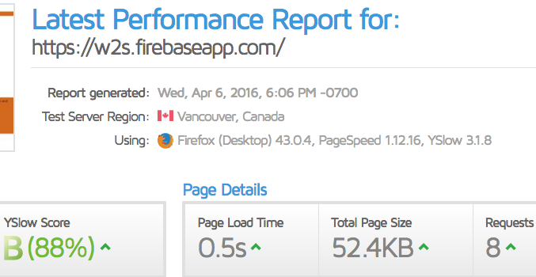
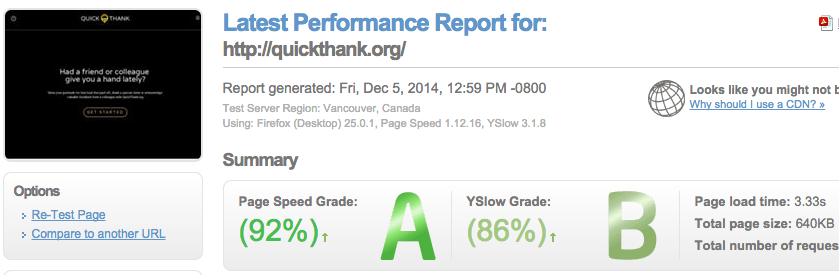

Andy Martha
- web developer!
image/svg+xml
Hi! Let's Have a Coffee & Work Together!
PHP environment
Drupal Theming
BackdropCMS Theming
Wordpress Theming
Development
Support Work
Open-Source
Basic Cart Plus
History
Javascript environment
Riot
React
Angular
JQuery
Hybrid
UI/UX
Creative Design
Quiz

I produce highly optimized performances. Under 2 second loading times and very touch-friendly even while using CMS, social media logins, API requests, animations, Javascripts, etc...

I write about wisdom from experience in
acceleratating the theming process
,
fast progressive web apps
and
web standards to make DX and UX progress happen faster.